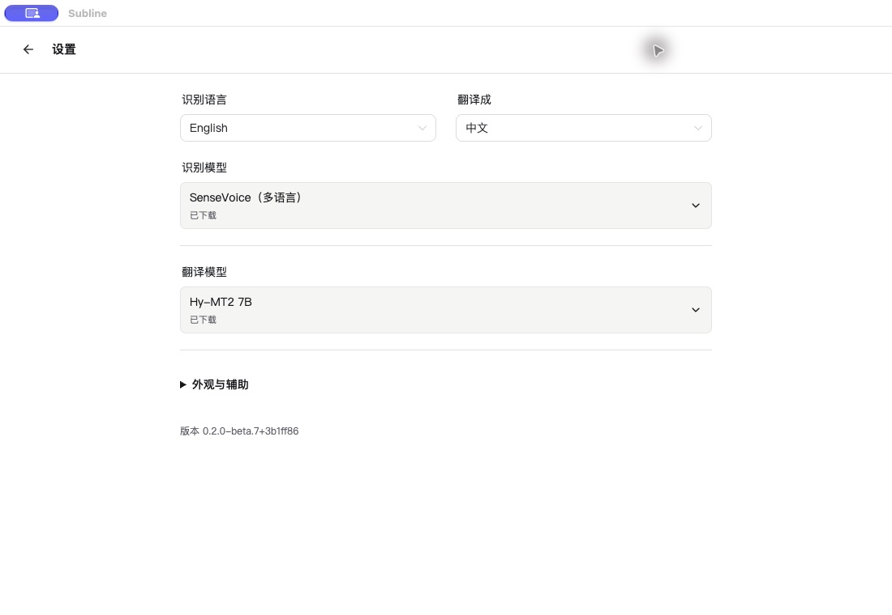

MAC 本地实时字幕 · 公开测试版
听得懂，
也能回头看。
把课堂、网课和会议里的声音，变成连续的原文与译文。
先下载，再跟着下面的步骤开始。
v0.2.0-beta.8 · 免费 · 不用注册 · 不用 API Key
需要 M1 或更新的 Mac，macOS 14.2+
暂不提供 Intel Mac、Windows 或 iPhone 安装包。不知道电脑是否支持？
下载前看一眼
你的 Mac 能用吗？
01 / 电脑
点左上角 →「关于本机」。芯片显示 Apple M1、M2、M3 或更新型号，系统为 macOS 14.2 或更新，即符合安装条件。
02 / 存储
安装应用外，还需给模型留空间：只转写约 0.25 GB；较轻的 M2M100 翻译约 0.7 GB；Hy-MT2 翻译约 4.6 GB。下载和安装还需要额外空余空间。
03 / 内存
8 / 16 GB Mac 建议先试只转写，需要翻译时先试 M2M-100（轻量，418M）。本地翻译只在 48 GB Mac 上验证过，较小内存的流畅程度尚未确认。
从下载到第一行字幕
照着这四步就好。
不需要安装 Git，不需要克隆代码，也不用输入命令。
- 1
下载，拖进「应用程序」
点击上面的「下载 Mac 版」。下载完成后，双击以 .dmg 结尾的文件，把 Subline.app 拖进「应用程序」，然后从「应用程序」打开 Subline。
安装包已签名并通过 Apple 公证。首次打开时，按系统提示确认即可。无需注册 GitHub，也不用下载 Source code。
- 2
先选语言，再准备模型
首次打开按提示选择界面语言。在设置里把「识别语言」设成实际听到的语言，例如日语。
macOS 26 及以上可选择 Apple 语音识别；其他支持的系统可使用 SenseVoice，按提示下载识别模型。下载后，确认已选中要使用的模型。
新安装默认只转写。需要中文译文时，在设置里选择本地翻译模型，并把翻译目标设为中文。8 / 16 GB Mac 建议先试较轻的 M2M-100（轻量，418M）。下载完后再选中它。

beta.7 设置页示例；beta.8 增加了 Apple 语音识别选项。 - 3
选声音来源，开始录音
听教室或身边的人说话：选「麦克风」，按提示允许访问麦克风。
听电脑里的网课、视频或会议：选「系统音频」，按提示允许录制系统音频。
点击开始录音。第一次使用需要等待模型加载；先试一小段，确认能看到原文，需要翻译时再确认下方出现译文。
- 4
结束后，记得点「归档」
停止录音后，等译文完成，再点击顶栏的归档入口保存。保存后到归档页查看，beta.8 还可以回放原音。
停止录音 ≠ 保存。想留住这次内容，一定要点归档。未归档录音会在退出时清理。
一分钟看完
下载与首次使用图解
60 秒无声教程，带中文字幕。安装部分为步骤图解，应用画面使用已验证的 beta.7 截图。
遇到问题
卡住了，先看这里。
下载按钮点了没反应，或下载很慢
试着在电脑上的 Safari 或 Chrome 中打开本页，再点下载。安装包目前由 GitHub 提供，速度取决于网络；这里尚未提供国内备用下载。也可以打开版本下载页，展开 Assets，选择以 .dmg 结尾的文件。
有原文，但没有中文译文
新安装默认关闭翻译。到设置中选择本地翻译模型，等待下载完成后选中它，再确认翻译目标为中文。首次加载模型需要等待；模型准备失败时，原文转写仍可继续。
录音开始了，但没有字幕
先确认声音来源：麦克风用于现场声音，系统音频用于电脑播放的声音。到「系统设置 → 隐私与安全性」检查对应的麦克风或屏幕与系统音频录制权限，再按系统提示重新打开应用。也检查识别模型是否已下载并选中。
可以完全离线吗？需要付费账号吗？
应用免费，不需要注册或 API Key。首次下载模型需要联网；所需资源准备好后，本地识别和本地翻译可离线使用。手动选择 API 翻译时，文字会发给你配置的服务，需要另行配置。
提示安装包损坏，或仍然打不开
先确认使用的是本页的原始 DMG、电脑型号及系统版本符合要求，再重新下载。仍失败时，记录提示内容和系统版本，通过下面的反馈入口报告。无需关闭系统安全保护。
Windows / Intel Mac / iPhone 能下载吗？
这一页提供的安装包仅适用于 Apple 芯片 Mac。其他平台目前没有可直接推荐给普通用户的公开安装包，不要下载这个 DMG 尝试安装。
还没解决？邮件反馈，附上电脑芯片、系统版本与出错截图；分享前请遮住私人内容。也可在 GitHub 反馈。